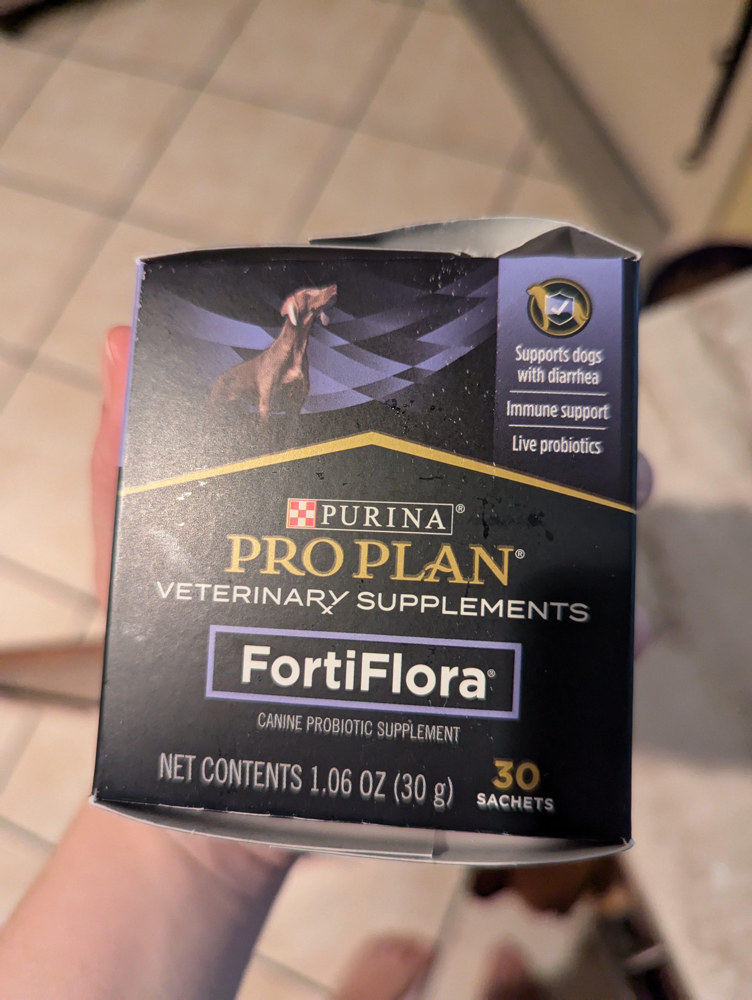
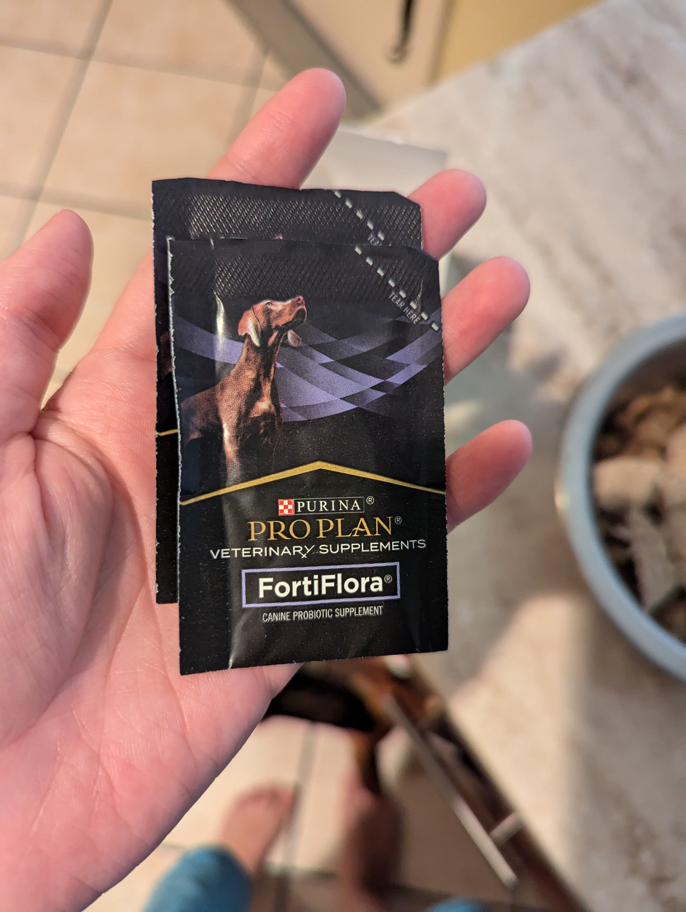
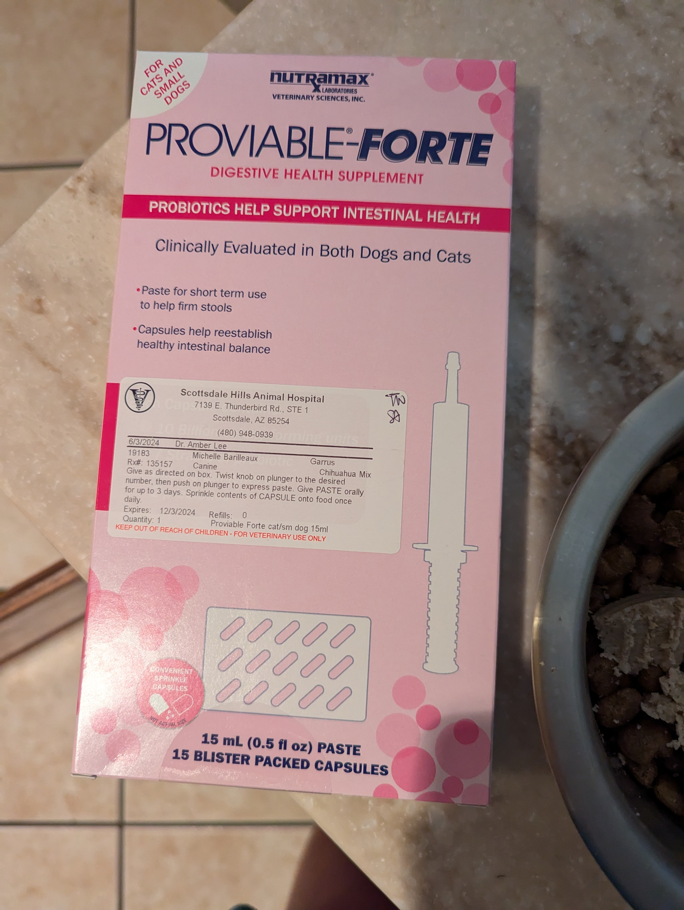
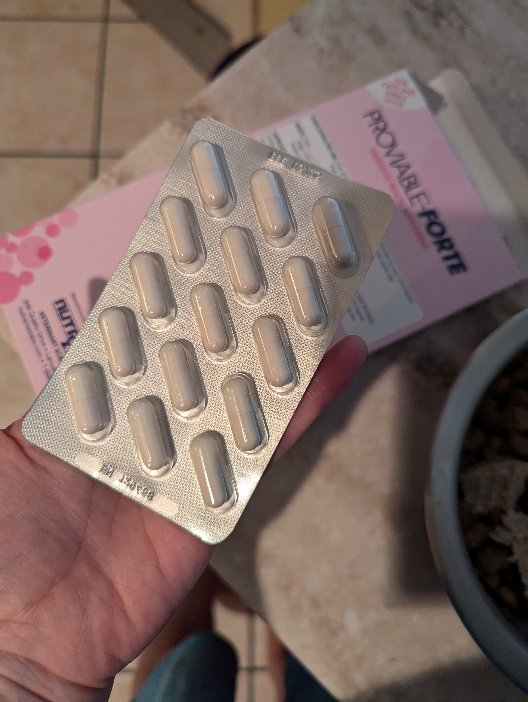
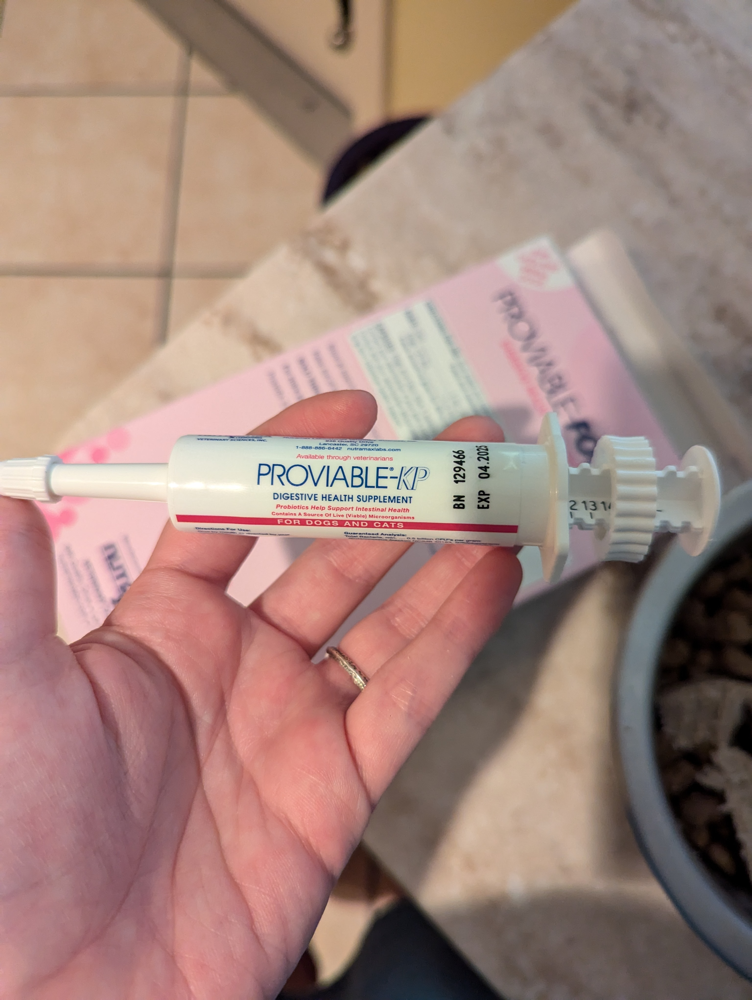

Vet Care
Scottsdale Hills Animal Hospital & Grooming
Address: 7139 E Thunderbird Rd #1, Scottsdale, AZ 85254
Phone: (480) 948-0939





If Garrus has an upset stomach and soft stools you can add a packet of the black probiotics to his wet food and mix it in with a little bit of water
The vet probiotics should be used if his stools are very soft
If he has fully liquid diarrhea that does not clear up after 1-2 days of probiotics then please call the vet